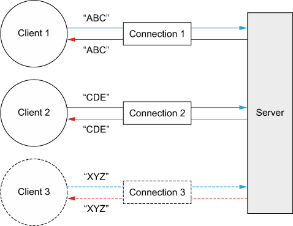

本章包含： - 设置开发环境 - 一个Echo服务和客户端 - 构建和测试应用
2.1 设置开发环境
下载安装JDK和MAVEN，设置JAVA_HOME，并且设置M2_HOME
2.2 Netty的客户端和服务器概览
下图是我们的Echo服务器和客户端一览。虽然我们大部分是在写web应用，但实现服务器和客户端有助于更好的理解Netty API. 
2.3 编写Echo服务器
所有的Netty Server都需要：
- 至少一个ChannelHandler:这个组建实现了服务端用于处理客户端提交的数据，它是业务逻辑。
- Bootstrapping:用来配置服务的启动代码。最少的启动代码是绑定端口。
2.3.1 ChannelHandler和业务逻辑
在上一篇中，我们介绍了Future和回调，并且介绍了他们用于事件驱动设计。我们也讨论了ChannelHandler，用于接收和响应事件通知。在Netty应用中，所有的数据处理逻辑都是包含在这个核心概念里面的。
因为Echo服务用于响应进来的消息，它需要实现 ...